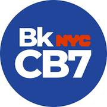

The district
 City Council
City Council State Assembly
State Assembly Congress
Congress Subway
Subway Citi Bike
Citi Bike NYC Ferry
NYC FerryTurn layers on and off. Tap an official's logo or a board's seal for its page. Zoning and land use lot by lot are on the land use map.
About
State Senator Jabari Brisport represents State Senate District 25. It sits in Brooklyn.
The district overlaps community boards Brooklyn 2, Brooklyn 3, Brooklyn 8 and Brooklyn 16.
It is policed by the 73rd, 77th, 79th, 81st and 88th Precincts.
It overlaps council districts 33, 35, 36, 37 and 41 and Assembly districts 52, 55, 56 and 57.
Members of the State Senate serve two year terms.
Next on the ballot in November 2026. Find your poll site and sample ballot there, or see what is coming up on the calendar.
State Senate District 25 in numbers
U.S. Census Bureau, American Community Survey 2019-2023 5-year estimates.
Committees
Contact
906 Broadway
Brooklyn, NY 11206 · District office
Overlap
Community boards





Bars show how many of the district's election districts fall in each board.
Overlapping elected officials


| Brooklyn CB 3 | 46% of the senate district | 94% of it |
| Brooklyn CB 2 | 24% of the senate district | 50% of it |
| Brooklyn CB 16 | 23% of the senate district | 74% of it |
| Brooklyn CB 8 | 5% of the senate district | 16% of it |
| Brooklyn CB 5 | 1% of the senate district | 1% of it |
| Brooklyn CB 6 | 1% of the senate district | 2% of it |
| 79 Precinct | 26% of the senate district | 96% of it |
| 73 Precinct | 23% of the senate district | 74% of it |
| 88 Precinct | 23% of the senate district | 88% of it |
| 81 Precinct | 19% of the senate district | 91% of it |
| 77 Precinct | 3% of the senate district | 12% of it |
| 78 Precinct | 3% of the senate district | 6% of it |
| 75 Precinct | 1% of the senate district | 1% of it |
| 84 Precinct | 1% of the senate district | 3% of it |
| Sector 88C | 10% of the senate district | 100% of it |
| Sector 73B | 9% of the senate district | 99% of it |
| Sector 79D | 7% of the senate district | 100% of it |
| Sector 79C | 7% of the senate district | 100% of it |
| Sector 79B | 7% of the senate district | 100% of it |
| Sector 73A | 6% of the senate district | 100% of it |
| Sector 81B | 6% of the senate district | 100% of it |
| Sector 73C | 6% of the senate district | 77% of it |
| Sector 79A | 5% of the senate district | 81% of it |
| Sector 81D | 5% of the senate district | 85% of it |
| Sector 88B | 5% of the senate district | 100% of it |
| Sector 88D | 4% of the senate district | 60% of it |
| School District 13 | 39% of the senate district | 61% of it |
| School District 16 | 22% of the senate district | 78% of it |
| School District 23 | 21% of the senate district | 71% of it |
| School District 14 | 13% of the senate district | 14% of it |
| School District 17 | 3% of the senate district | 4% of it |
| School District 19 | 2% of the senate district | 1% of it |
| Council District 36 | 34% of the senate district | 73% of it |
| Council District 41 | 25% of the senate district | 51% of it |
| Council District 35 | 22% of the senate district | 46% of it |
| Council District 33 | 11% of the senate district | 16% of it |
| Council District 37 | 6% of the senate district | 10% of it |
| Council District 39 | 1% of the senate district | 1% of it |
| Council District 42 | 1% of the senate district | 0% of it |
| Assembly District 56 | 31% of the senate district | 79% of it |
| Assembly District 57 | 28% of the senate district | 73% of it |
| Assembly District 55 | 27% of the senate district | 65% of it |
| Assembly District 52 | 9% of the senate district | 15% of it |
| Assembly District 44 | 4% of the senate district | 7% of it |
| Assembly District 54 | 1% of the senate district | 2% of it |